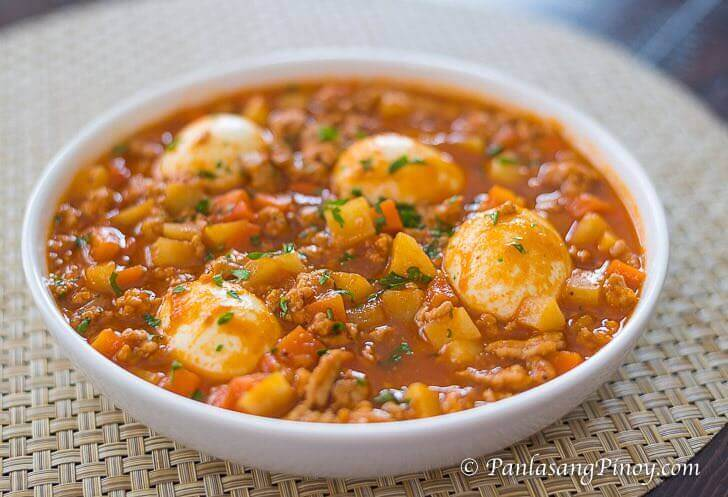

Pork Giniling
index

Pork Giniling is a pork dish that makes use of ground pork as the primary
ingredient. Ground pork is stewed in tomato sauce and water to bring out
the taste while vegetables such as carrots and potatoes (some also like
this with raisins and green peas) are added for additional flavor and
nutrition.
Ingredients
- 1 1/2 lb ground pork
- 1 1/2 cups potatoes diced
- 1 cup carrots diced
- 8 ounces tomato sauce
- 6 cloves garlic crushed
- 1 medium-sized onion minced
- 1 teaspoon granulated sugar
- 1 piece beef or pork cube
- 4 boiled eggs shelled (optional)
- Salt and pepper to taste
- 3 tablespoons cooking oil
- 1 cup water